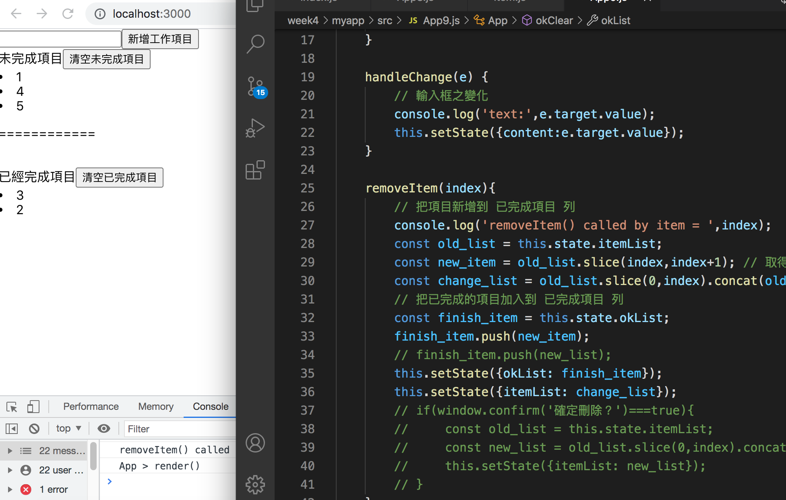

2021/07/21 Web front-end development
React
耶好開心～～雖然早上精神很不好，一直很想睡，但沒想到遇到練習題時，還是可以自己摸索出來，成功做出想要的成果了！真的非常開心！！
（觀摩老師寫法，還是覺得老師很厲害，寫得比我精簡很多！也很好理解的程式碼）
React 生命週期 - React 元件在使用上可分為三個階段
- 元件被安裝時（Mount）
- constructor()
- getDerivedStateFromProps()
- render()
- componentDidMount() // 類似元件後製處理
- 元件被更新時（Update）
- getDerivedStateFromProps()
- shouldComponentUpdate()
- render()
- cgetSnapshotBeforeUpdate()
- componentDidUpdate()
- 元件被移除時（Unmount）
- componentWillUnmount()
生命週期 - Mount
- constructor() // 只作用一次
- getDerivedStateFromProps() - 最常使用的狀況是「用初始接收到的 props 」去設定第一次 render 時的 state 或是做其他的事情。（這裡不能用 this ）
生命週期 - Unmount
- componentWillUnmount是在元件被移除時所會呼叫一次的唯一生命週期函數
- 移除新增的元素
生命週期 - Update
- getDerivedStateFromProps( props, state )
- 只要 re-render 此函式即被觸發，props 和 state 是更新過後的值
- shouldComponentUpdate( nextProps, nextState )
- 這個函數的功用像是守門員，用來做確認是不是真的要 update。這個函數要return一個布林值
- 當函數回傳 false 時，元件就不會更新，也不會繼續執行接下來的 render() 以及剩下的 update 生命週期函數
- 預設會回傳 true
- this.props 和 this.state 是更新之前的，新的 props 和 state 在參數中以 nextProps 和 nextState 存在
- getSnapshotBeforeUpdate( prevProps, prevProps )
- 它的用途是讓你可以把更新前的最後一刻 DOM 的狀況紀錄下來，然後用 return 值傳參數到 componentDidUpdate 中
- 所以如果沒有要傳東西給componentDidUpdate，就要回傳null
- this.props和this.state是更新之後的，舊的props和state在參數中以prevState和prevProps存在
- componentDidUpdate(prevProps, prevState, snapshot)
- 這個函數被強烈建議把「更新後想做的事情」放在這裡，包括先前提過的fetch等。因為這個函數是唯一也是最後在DOM真的被更新後執行的週期函數
- 在這邊this.props和this.state是更新之後的，舊的props和state在參數中以prevProps和prevProps存在，snapshot是getSnapshotBeforeUpdate(prevProps, prevProps)傳來的參數
- 使用這個函數時有一個很重要的事情: 只要任何一個props/state被設定(assign)，就會重新進入Update週期，導致此函數再次被執行
react-router-dom
- 後端路由，從後端程式碼去監聽不同的url，決定該 response 哪個頁面
- 前端路由，由網頁程式碼更改頁面不ㄧ樣的地方，所以只需一個路徑即可，稱為 Single Page Application(SPA)
- 前端路由的套件：react-router-dom
- HashRouter: 頁面路徑最前面會有 #，換url時不會發送request
- BrowserRouter: 頁面路徑不會有#，換url時會發送request
- 安裝 - npm i react-router-dom
HashRouter - 由上往下做匹配，匹配到就不會匹配後面的頁面。換頁面時，並不會有請求，不會有網路活動，也減少網路流量（SPA）。BrowserRouter 就是一般的路由，每次都會做請求。
url 的匹配是循序比對下來，只要部分匹配即可，所以將 /second 調到前面才可以顯示第二頁。
HashRouter 跟 BrowserRouter 一定要包在外面，加上 Switch 只會執行第一個符合的匹配，而不會匹配的全部渲染。
Summary
今天精神都不是很好 Q_Q，不過今天學的東西都很重要呢！不懂的部分還是要找時間去看文章閱讀，希望我不會多學了一個新的，都還沒很深入，就又去學了另一個了，之前學的東西也要好好深入的自學下去！（握拳）